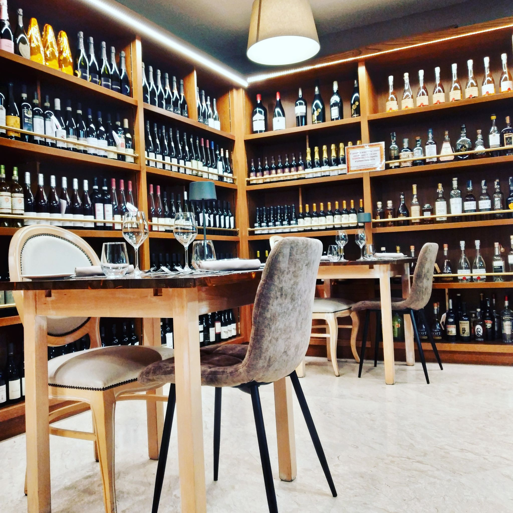
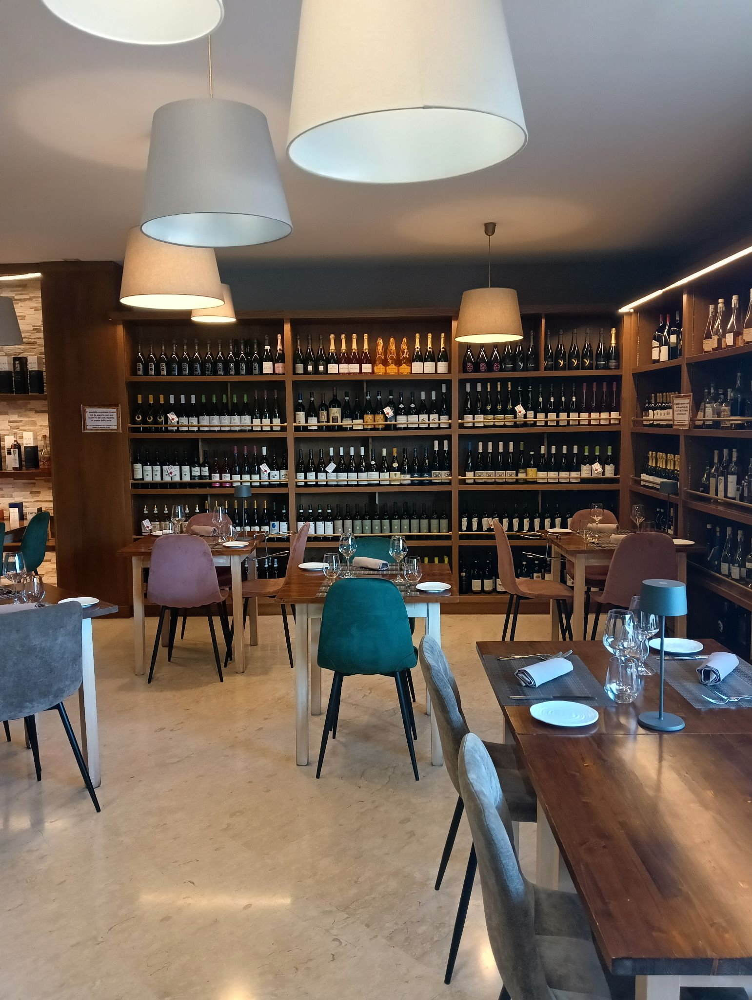

Ambiente
Un locale raffinato ma accogliente, dove ogni dettaglio contribuisce a creare un'atmosfera intima e sofisticata.
Il Ristorante
Nel cuore di Frosinone, Sapore è Sapere nasce dall'idea che cucinare sia un atto di conoscenza. Selezioniamo ingredienti di stagione da piccoli produttori e li trasformiamo con rispetto e curiosità, fondendo tradizioni italiane e tecniche contemporanee.
Conoscere davvero un sapore significa conoscere chi lo ha coltivato, la terra da cui proviene, la stagione che lo ha maturato. È questo il viaggio che vi invitiamo a fare, un boccone alla volta.
"Conoscere un ingrediente è il primo passo per farlo cantare."

L'Atmosfera
Un locale raffinato ma accogliente, dove ogni dettaglio contribuisce a creare un'atmosfera intima e sofisticata.
Attenzione personale e professionalità, con un tocco caldo e familiare che vi fa sentire a casa.
Ogni sera è un'occasione per scoprire nuovi sapori, che siate in due o in gruppo.
La nostra filosofia
Sapore è Sapere non è solo un nome: è un modo di intendere la cucina. Ogni piatto che serviamo è il risultato di anni di studio, pratica e passione.
Lo chef Marco Taglione, formato in cucine stellate italiane e internazionali, porta in tavola l'incontro tra tradizione e innovazione. Ogni ricetta è pensata per sorprendervi e, allo stesso tempo, farvi sentire a casa.
La nostra carta dei vini, con oltre 100 etichette scelte con cura, è pensata per accompagnare ogni piatto con l'abbinamento giusto, valorizzando tanto i grandi classici quanto le proposte più creative.

Vi aspettiamo
Prenotate un tavolo: sarà un piacere accogliervi e guidarvi tra i nostri sapori.